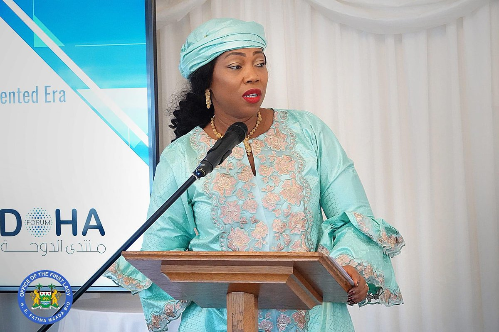
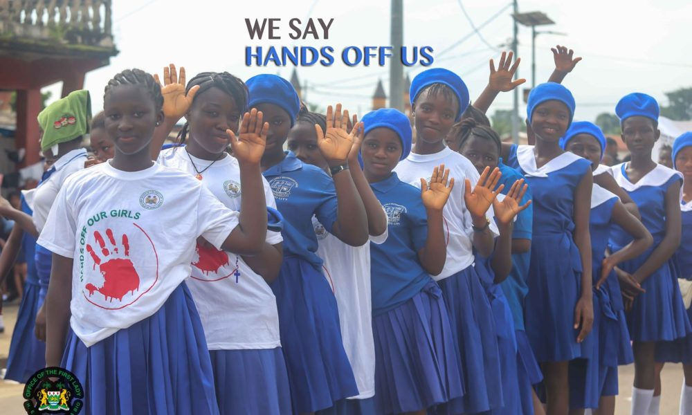

Fatima Bio: First Lady of Sierra Leone
Fatima Bio, the First Lady of Sierra Leone, is widely recognized for her commitment to social reform and women's empowerment in her country. Since assuming her role, she has made significant strides in addressing pressing issues related to gender-based violence, healthcare, and education, seeking to create a more equitable and just society.
Born in Sierra Leone, Fatima Bio pursued her education in the United Kingdom and gained substantial experience working in media and film. Her background in journalism has allowed her to bring a unique perspective to her advocacy work, using her platform to reach both national and international audiences.
One of her flagship initiatives is the "Hands Off Our Girls" campaign, launched to combat gender-based violence and protect young girls from early marriage and abuse. This campaign has raised awareness across the country, mobilizing communities and encouraging men and women alike to protect the rights of girls and young women.
Alongside this campaign, Fatima Bio has advocated for improved healthcare for women, focusing on maternal health and infant mortality reduction. She has worked closely with local and international organizations to enhance healthcare infrastructure and support programs that benefit vulnerable populations.
Her role as First Lady has allowed her to shine a spotlight on issues that often go unnoticed, and her dedication to these causes has earned her respect and admiration both at home and abroad. Through her initiatives, Fatima Bio aims to build a legacy of positive change, especially for women and young girls in Sierra Leone.